当前节点：C49正式止2K，I负例后检验受限RGB可行性
C49实际完成2000正式＋1996工程更新，完整49对照已输出；13包599,316,804B必要数据已取回逐SHA核验。没有继续5K／10K，不称RGB参数已收敛。全49对21K原门仍477通过／462失败／100空域，不替换默认结果。
H2＋2K的一项真实正收益保留：128 KEEP主缝.00461353，较21K改善15.83%；DELETE .00933907仍回退，其它边界也未整体通过。固定世界边带I在128/137 KD四次前向后，128近缝变为.00817736／.01183441、137横向.01063763，反而更差；停止该0.4m控制，不补早帧、不搜宽度。前景保护成立不能替代修缝结果。
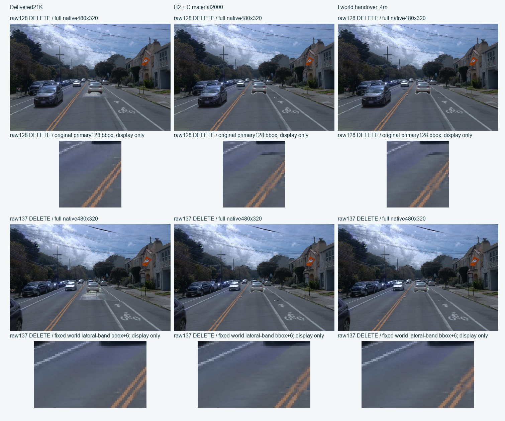
J：先判断同一份RGB能否满足接缝边界

固定H2＋2K的geometry、opacity和可见性，测原53bin／状态到2119个父RGB的signed affine映射。实际16F／16dummyB算子＋8F一次扰动验证通过，误差最大约1.21e-7；原模型参数0更新。下一步仅一次HiGHS求解，目标是原C49可见质量加权最小材质改动、满足原near／lateral／主缝要求；7979父固定。该质量权重不是H2保护保证，其余光度门未被LP约束，求解可行也必须新8F原生复验，尚无材质成功结论。
最新执行：回到已交付21K底座，只训练道路材质
历史执行节点：600s生命周期通过后C49正式已实际止2000；H2与I结果见顶部最新节点，当前J为受限颜色可行性控制。原场景与7979父冻结。
用户已撤回端到端／单Full5替换路线。继续使用原v44＋a5车顶恢复；21K是原场景10K＋道路1K＋恢复a5的Full5 10K的组件累计，身份核对和接入为0K，并非一个模型连续训练21K。
后台对照沿用完整C道路层和既有C材质初始化，车顶、身份、背景、环境、道路几何和透明度全部冻结，仅训练父共享道路RGB。49帧均用于训练，原HELD9不再称为独立测试。先按全49真实监督测可训练父，再做约10分钟真实GPU smoke，覆盖保存、评价、完整状态恢复和后续入口；通过后新正式时钟从0开始，暂上限10K，500／2K／5K／10K检查，由效果与平台期决定是否提前停。
原C已知遮轮和部分接缝问题不会否决用户明确授权的后台对照，也不会因此宣称通过或替换默认结果。前台继续4帧H候选：基于冻结三维车辆模型的可见贡献保守裁掉相交道路图元，另验银片、接缝与真实轮胎；不是E/F颜色残差，也不是屏幕RGB覆盖。
已撤回的单场景20K路线（历史计划）
最新执行：一份场景，总20K，分阶段冻结
优先复用已有 Full5 10K，作为唯一场景底座；先验证 raw94/105/128/137 的车顶、a6、身份与深度，再接入完整C道路模块。旧 v44＋Full5 双底座的49帧／10K后台实验尚未启动，当前不再启动该路线。结构尚未验收，后10K材质长跑尚未放行。

后半程仅优化道路RGB；车辆、背景、环境、身份归属、道路几何和接管关系全部冻结。一次KEEP／DELETE配对计一次优化更新，原生渲染调用另记。正式优化总上限20K；约10分钟真实GPU smoke、保存、评价、全状态恢复和阶段切换的工程开销单列。10K结构未通过则先修输入或实现，颜色平台期且残片来自几何时停止材质训练。
已有Full5保存的五种来源ID不自动等于正确语义归属；会保留谱系并单独核验身份。a6与旧v44 C2的差异也会实测披露。以下C/D/E/F/G是旧底座的历史诊断，不能当作新单场景方案的结果。
Scene008：道路融合接入的无回退验证
历史C/D/E/F/G均未成为默认结果。当前已按用户要求准备完整C49材质后台对照，和4帧H可见性迭代分别执行；实际启动与完成以收据为准。C已知遮轮／接缝回退继续保留，原v44＋a5默认结果保持。
基线是已交付的最新SemanticActor5V44Integration，包含固定49BUILD语义sidecar。先比较latest、加AA支撑、加同支撑C材质；不把C对AA的收益替代对最新基线的守护。本轮首关raw94/105/128/137，raw130轮胎独立诊断。
当前组件与数据流

最新实测：H2四帧完成，C49正式已启动
真实600.208秒smoke与保存／评价／完整fresh恢复／next2验证全部通过，已从同C材质初始化、新Adam0自动启动正式500／2000步。smoke1992＋disposable2＋freshrestore2＝1996工程更新另计；C49资格98F／98B另计，正式步数不从这些计数累计。
恢复起点全状态逐值一致，保存材质的128KD原生RGB／alpha／depthsum／8组贡献一致。next2 RGB最大差0、Adam最大差约2.84e-14、sampler及RNG相同，不把整个next2称为bitexact。原21K背景、车辆、身份、道路几何和透明度更新仍为0。
H2复用H1三份已收敛可见性清单并重新公共渲染核对相同，其余状态补齐。仅将工程迭代上限16升至64，105KD实际各42轮收敛，保护阈值与原评价门未变。新增113F／100次dummy反向／8张公开图／0优化；原H1的54F／47B与105K资源上限失败保留。
| 检查 | H2实测 | 判断 |
|---|---|---|
| a5／a6观测区域RGB、a6测深、KEEP37 | MAE无回退；模型C2贡献最大下降约7.15e-7 | 保护有所改善；非全图像素exact |
| 128银片诊断ROI static均值 | 0.37629 → 0.06541 | 大块减少，轮胎下薄边仍在 |
| 137银片诊断ROI static均值 | 0.82410 → 0.04294 | 主要由newroad接管 |
| 原128主接缝KEEP／DELETE | 相对baseline +4.65%／+46.50% | 未改善 |
| 原4560的94项读数 | 46通过／40失败／8空域 | 不采纳；其余区域回退继续披露 |
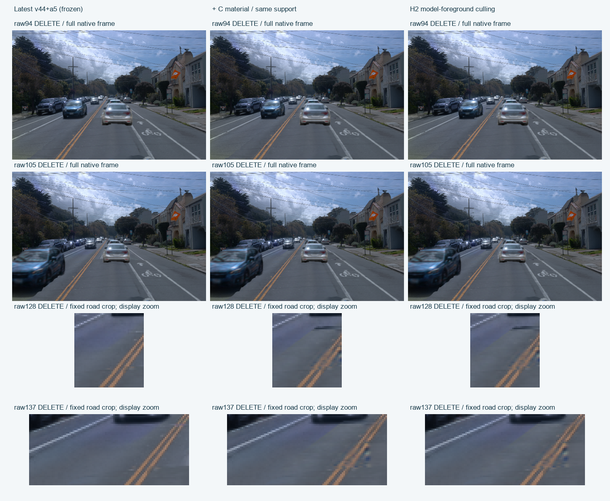
KEEP四帧
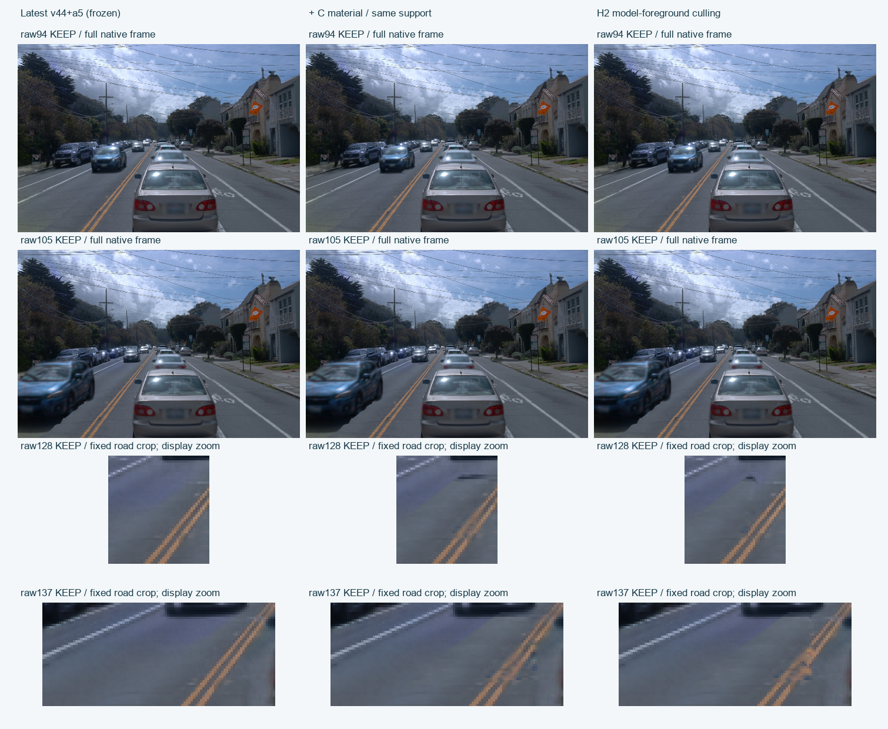
原门独立CPU评价 · 前景保护、银片与暗条诊断 · H2工程合同
下一步将正式C49材质检查点与H2的同一几何／可见性清单组合，再做4帧原生渲染；仅复用已经验证的可见性，不重复100次资格反向。材质收益与原C遮挡缺陷分别核对，不把背景对照运行许可当作默认采用。
当前关键：银片与真实轮胎不是同一组件
raw137银片诊断矩形[207,207,274,227]的DELETE中，baseline贡献均值native_static=0.82410、oldroad=0.03286、C2=0；C插入后newroad=0.92407、static=0.04294，确有新支撑覆盖静态补片。该137矩形是实际看图后的定位，仅作组件诊断。
raw128指定矩形[210,202,302,242]同时含补片和真实C2：baseline DELETE的C2贡献均值0.04367，C后降为0.02589；C2主导像素174→94。原static均值0.37629→0.03216、newroad=0.40778。不能把整个矩形视为残片一并覆盖或退役。alpha_T归属不是RGB分解，也不是新的像素语义真值。
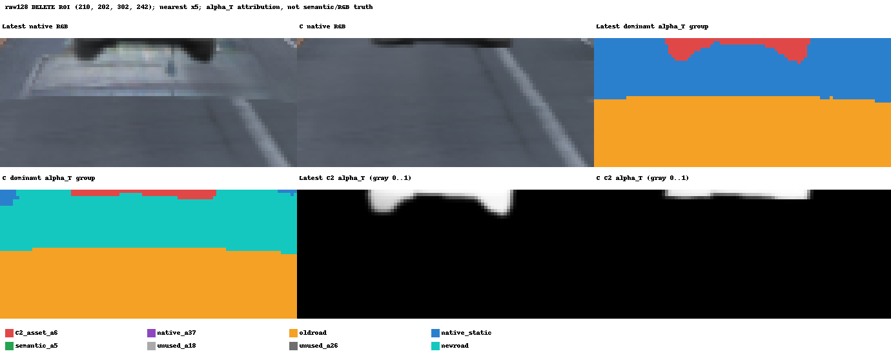
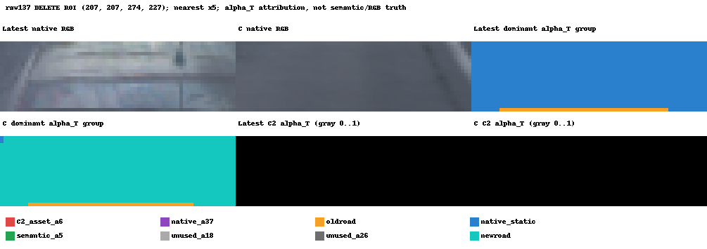
实际四帧：道路与车体同时保留视野
94/105直接粘贴完整480×320；128用原蓝框(165,188)–(208,234)，137用原世界mask包围盒外扩6像素。同一行三列同crop；局部NEAREST放大仅用于显示，不是新算法图或评价域。源PNG不改。
仅DELETE a37
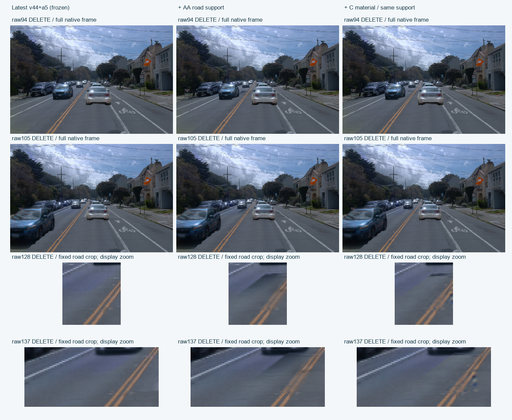
完整KEEP
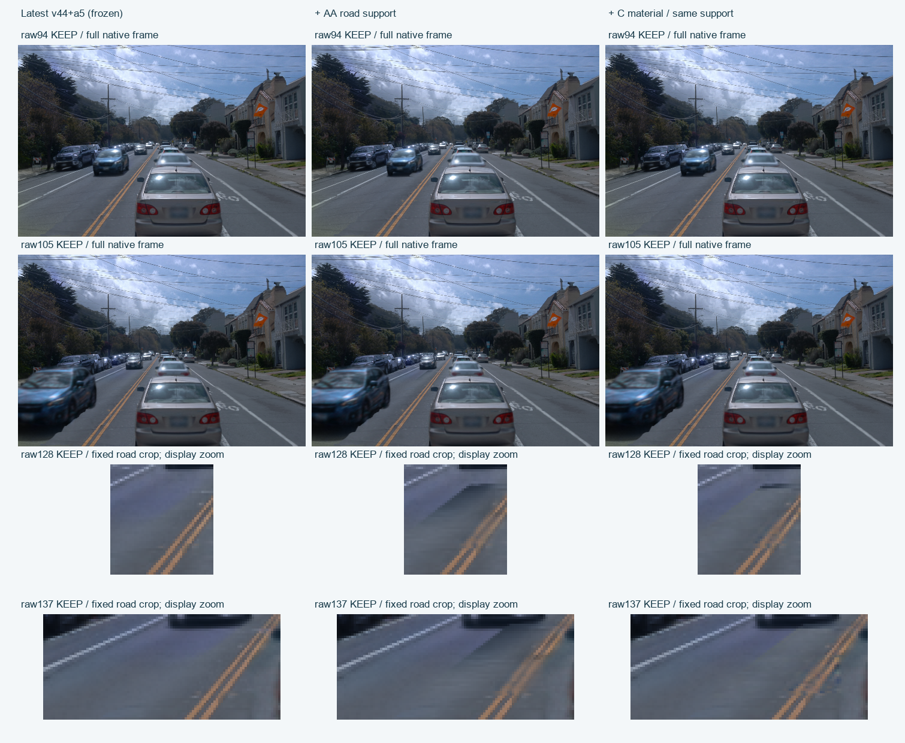
正式固定域评价：AA/C对最新基线
AA/C首关：100项通过 / 96项失败 / 16项空域无支持。unsupported不计作通过。
| 候选 | 状态 | 固定世界边界 | 配对bin | latest | 候选 | Δ残差跳变 |
|---|---|---|---|---|---|---|
| AA | KEEP | near_x | 24 | 0.0060358 | 0.0066398 | 0.0006041 |
| AA | KEEP | far_x | 0 | 无支持 | 无支持 | 无支持 |
| AA | KEEP | lateral_y | 23 | 0.0038316 | 0.0130089 | 0.0091774 |
| C | KEEP | near_x | 24 | 0.0060358 | 0.0075129 | 0.0014771 |
| C | KEEP | far_x | 0 | 无支持 | 无支持 | 无支持 |
| C | KEEP | lateral_y | 23 | 0.0038316 | 0.0082926 | 0.0044611 |
| AA | DELETE | near_x | 24 | 0.0071493 | 0.0076267 | 0.0004775 |
| AA | DELETE | far_x | 0 | 无支持 | 无支持 | 无支持 |
| AA | DELETE | lateral_y | 23 | 0.0035232 | 0.0172307 | 0.0137075 |
| C | DELETE | near_x | 24 | 0.0071493 | 0.0090324 | 0.0018831 |
| C | DELETE | far_x | 0 | 无支持 | 无支持 | 无支持 |
| C | DELETE | lateral_y | 23 | 0.0035232 | 0.0085519 | 0.0050287 |
原raw128蓝框独立保留
| 候选 | 状态 | 原1385道路像素 RGB MAE | 原6bin near残差jump | near相对变化 |
|---|---|---|---|---|
| AA | KEEP | 0.0133528 → 0.0282548 | 0.0054814 → 0.0071196 | +29.89% |
| C | KEEP | 0.0133528 → 0.0145161 | 0.0054814 → 0.0077848 | +42.02% |
| AA | DELETE | 0.0131304 → 0.0295980 | 0.0080031 → 0.0097941 | +22.38% |
| C | DELETE | 0.0131304 → 0.0159663 | 0.0080031 → 0.0117246 | +46.50% |
主蓝框两侧35/33像素，与worldpatch128两侧36/33分别计算，不拼接。RGB与残差jump以原观测的0–1编码为单位；评分保留原生float，不另加上界截断，PNG仅作显示。
每帧原保护门：最坏值也保留
| 候选 | 原门 | raw/状态 | 最坏变化 | 原上限 | 结果 |
|---|---|---|---|---|---|
| AA | a5_RGB | 105/KEEP | 0.0000000 | 0.0000010 | PASS |
| C | a5_RGB | 105/KEEP | 0.0000000 | 0.0000010 | PASS |
| AA | a5_upper_RGB | 94/KEEP | 0.0000000 | 0.0000010 | PASS |
| C | a5_upper_RGB | 94/KEEP | 0.0000000 | 0.0000010 | PASS |
| AA | a6_RGB | 94/DELETE | 0.0001105 | 0.0000010 | FAIL |
| C | a6_RGB | 94/DELETE | 0.0001105 | 0.0000010 | FAIL |
| AA | a6_depth_m | 94/KEEP | 0.0028943 | 0.0000100 | FAIL |
| C | a6_depth_m | 94/KEEP | 0.0028943 | 0.0000100 | FAIL |
| AA | a37_RGB | 137/KEEP | 0.0000000 | 0.0000010 | PASS |
| C | a37_RGB | 137/KEEP | 0.0000000 | 0.0000010 | PASS |
| AA | protected_nonroad_RGB | 94/DELETE | 0.0004457 | 0.0000010 | FAIL |
| C | protected_nonroad_RGB | 94/DELETE | 0.0004272 | 0.0000010 | FAIL |
| AA | original_road_RGB | 105/DELETE | 0.0014731 | 0.0000010 | FAIL |
| C | original_road_RGB | 94/DELETE | 0.0006143 | 0.0000010 | FAIL |
| AA | nonroad_guard:alpha_pixel_max_abs | 137/DELETE | 0.3371057 | 0.0000010 | FAIL |
| C | nonroad_guard:alpha_pixel_max_abs | 137/DELETE | 0.3371057 | 0.0000010 | FAIL |
| AA | nonroad_guard:depth_pixel_max_abs_m | 137/DELETE | 14.1801167 | 0.0000100 | FAIL |
| C | nonroad_guard:depth_pixel_max_abs_m | 137/DELETE | 14.1801167 | 0.0000100 | FAIL |
RGB列是对原GT的MAE变化；a6_depth_m为测深MAE变化（m）。nonroad_guard两列是候选对latest的逐像素最大差（alpha或m），不是对GT的精度，也不据MAE通过宣称像素完全一致。
全部失败门（不删帧、不改阈值）
| 名称 | raw | 状态 | 值 | 上限 |
|---|---|---|---|---|
| AA:a6_RGB | 94 | keep | 0.0001087 | 0.0000010 |
| AA:protected_nonroad_RGB | 94 | keep | 0.0001419 | 0.0000010 |
| AA:original_road_RGB | 94 | keep | 0.0001990 | 0.0000010 |
| AA:a6_depth_m | 94 | keep | 0.0028943 | 0.0000100 |
| AA:nonroad_guard:alpha_pixel_max_abs | 94 | keep | 0.1263984 | 0.0000010 |
| AA:nonroad_guard:depth_pixel_max_abs_m | 94 | keep | 4.7181950 | 0.0000100 |
| C:a6_RGB | 94 | keep | 0.0001087 | 0.0000010 |
| C:protected_nonroad_RGB | 94 | keep | 0.0001339 | 0.0000010 |
| C:original_road_RGB | 94 | keep | 0.0000136 | 0.0000010 |
| C:a6_depth_m | 94 | keep | 0.0028943 | 0.0000100 |
| C:nonroad_guard:alpha_pixel_max_abs | 94 | keep | 0.1263984 | 0.0000010 |
| C:nonroad_guard:depth_pixel_max_abs_m | 94 | keep | 4.7181950 | 0.0000100 |
| AA:a6_RGB | 94 | delete | 0.0001105 | 0.0000010 |
| AA:protected_nonroad_RGB | 94 | delete | 0.0004457 | 0.0000010 |
| AA:original_road_RGB | 94 | delete | 0.0012827 | 0.0000010 |
| AA:a6_depth_m | 94 | delete | 0.0028943 | 0.0000100 |
| AA:nonroad_guard:alpha_pixel_max_abs | 94 | delete | 0.2409371 | 0.0000010 |
| AA:nonroad_guard:depth_pixel_max_abs_m | 94 | delete | 10.9494495 | 0.0000100 |
| C:a6_RGB | 94 | delete | 0.0001105 | 0.0000010 |
| C:protected_nonroad_RGB | 94 | delete | 0.0004272 | 0.0000010 |
| C:original_road_RGB | 94 | delete | 0.0006143 | 0.0000010 |
| C:a6_depth_m | 94 | delete | 0.0028943 | 0.0000100 |
| C:nonroad_guard:alpha_pixel_max_abs | 94 | delete | 0.2409371 | 0.0000010 |
| C:nonroad_guard:depth_pixel_max_abs_m | 94 | delete | 10.9494495 | 0.0000100 |
| AA:a6_RGB | 105 | keep | 0.0000985 | 0.0000010 |
| AA:protected_nonroad_RGB | 105 | keep | 0.0000137 | 0.0000010 |
| AA:original_road_RGB | 105 | keep | 0.0002998 | 0.0000010 |
| AA:nonroad_guard:alpha_pixel_max_abs | 105 | keep | 0.1401888 | 0.0000010 |
| AA:nonroad_guard:depth_pixel_max_abs_m | 105 | keep | 5.6426830 | 0.0000100 |
| C:a6_RGB | 105 | keep | 0.0000985 | 0.0000010 |
| C:protected_nonroad_RGB | 105 | keep | 0.0000118 | 0.0000010 |
| C:original_road_RGB | 105 | keep | 0.0000355 | 0.0000010 |
| C:nonroad_guard:alpha_pixel_max_abs | 105 | keep | 0.1401888 | 0.0000010 |
| C:nonroad_guard:depth_pixel_max_abs_m | 105 | keep | 5.6426830 | 0.0000100 |
| AA:a6_RGB | 105 | delete | 0.0000985 | 0.0000010 |
| AA:protected_nonroad_RGB | 105 | delete | 0.0002818 | 0.0000010 |
| AA:original_road_RGB | 105 | delete | 0.0014731 | 0.0000010 |
| AA:nonroad_guard:alpha_pixel_max_abs | 105 | delete | 0.2327263 | 0.0000010 |
| AA:nonroad_guard:depth_pixel_max_abs_m | 105 | delete | 11.4573841 | 0.0000100 |
| C:a6_RGB | 105 | delete | 0.0000985 | 0.0000010 |
| C:protected_nonroad_RGB | 105 | delete | 0.0002718 | 0.0000010 |
| C:original_road_RGB | 105 | delete | 0.0005526 | 0.0000010 |
| C:nonroad_guard:alpha_pixel_max_abs | 105 | delete | 0.2327263 | 0.0000010 |
| C:nonroad_guard:depth_pixel_max_abs_m | 105 | delete | 11.4573841 | 0.0000100 |
| AA:protected_nonroad_RGB | 128 | keep | 0.0001789 | 0.0000010 |
| AA:original_road_RGB | 128 | keep | 0.0008505 | 0.0000010 |
| AA:nonroad_guard:alpha_pixel_max_abs | 128 | keep | 0.2331453 | 0.0000010 |
| AA:nonroad_guard:depth_pixel_max_abs_m | 128 | keep | 6.9981098 | 0.0000100 |
| C:protected_nonroad_RGB | 128 | keep | 0.0001672 | 0.0000010 |
| C:original_road_RGB | 128 | keep | 0.0000762 | 0.0000010 |
| C:nonroad_guard:alpha_pixel_max_abs | 128 | keep | 0.2331453 | 0.0000010 |
| C:nonroad_guard:depth_pixel_max_abs_m | 128 | keep | 6.9981098 | 0.0000100 |
| AA:protected_nonroad_RGB | 128 | delete | 0.0003414 | 0.0000010 |
| AA:original_road_RGB | 128 | delete | 0.0009511 | 0.0000010 |
| AA:nonroad_guard:alpha_pixel_max_abs | 128 | delete | 0.3002320 | 0.0000010 |
| AA:nonroad_guard:depth_pixel_max_abs_m | 128 | delete | 13.7166920 | 0.0000100 |
| C:protected_nonroad_RGB | 128 | delete | 0.0003355 | 0.0000010 |
| C:original_road_RGB | 128 | delete | 0.0001880 | 0.0000010 |
| C:nonroad_guard:alpha_pixel_max_abs | 128 | delete | 0.3002320 | 0.0000010 |
| C:nonroad_guard:depth_pixel_max_abs_m | 128 | delete | 13.7166920 | 0.0000100 |
| AA:protected_nonroad_RGB | 137 | keep | 0.0002922 | 0.0000010 |
| AA:original_road_RGB | 137 | keep | 0.0007643 | 0.0000010 |
| AA:nonroad_guard:alpha_pixel_max_abs | 137 | keep | 0.2188740 | 0.0000010 |
| AA:nonroad_guard:depth_pixel_max_abs_m | 137 | keep | 10.5114918 | 0.0000100 |
| C:protected_nonroad_RGB | 137 | keep | 0.0002459 | 0.0000010 |
| C:original_road_RGB | 137 | keep | 0.0001367 | 0.0000010 |
| C:nonroad_guard:alpha_pixel_max_abs | 137 | keep | 0.2188740 | 0.0000010 |
| C:nonroad_guard:depth_pixel_max_abs_m | 137 | keep | 10.5114918 | 0.0000100 |
| AA:protected_nonroad_RGB | 137 | delete | 0.0004186 | 0.0000010 |
| AA:original_road_RGB | 137 | delete | 0.0008006 | 0.0000010 |
| AA:nonroad_guard:alpha_pixel_max_abs | 137 | delete | 0.3371057 | 0.0000010 |
| AA:nonroad_guard:depth_pixel_max_abs_m | 137 | delete | 14.1801167 | 0.0000100 |
| C:protected_nonroad_RGB | 137 | delete | 0.0003712 | 0.0000010 |
| C:original_road_RGB | 137 | delete | 0.0002095 | 0.0000010 |
| C:nonroad_guard:alpha_pixel_max_abs | 137 | delete | 0.3371057 | 0.0000010 |
| C:nonroad_guard:depth_pixel_max_abs_m | 137 | delete | 14.1801167 | 0.0000100 |
| AA:near_x:equal_bin_pooled | keep | 0.0006041 | 0.0000010 | |
| AA:lateral_y:equal_bin_pooled | keep | 0.0091774 | 0.0000010 | |
| AA:raw128:primary_near_no_regression | keep | 0.0016383 | 0.0000010 | |
| AA:raw128:primary_near_absolute_reduction | keep | 0.0016383 | -0.0001000 | |
| AA:raw128:primary_near_relative_reduction | keep | 0.2988763 | -0.0500000 | |
| C:near_x:equal_bin_pooled | keep | 0.0014771 | 0.0000010 | |
| C:lateral_y:equal_bin_pooled | keep | 0.0044611 | 0.0000010 | |
| C:raw128:primary_near_no_regression | keep | 0.0023034 | 0.0000010 | |
| C:raw128:primary_near_absolute_reduction | keep | 0.0023034 | -0.0001000 | |
| C:raw128:primary_near_relative_reduction | keep | 0.4202285 | -0.0500000 | |
| AA:near_x:equal_bin_pooled | delete | 0.0004775 | 0.0000010 | |
| AA:lateral_y:equal_bin_pooled | delete | 0.0137075 | 0.0000010 | |
| AA:raw128:primary_near_no_regression | delete | 0.0017909 | 0.0000010 | |
| AA:raw128:primary_near_absolute_reduction | delete | 0.0017909 | -0.0001000 | |
| AA:raw128:primary_near_relative_reduction | delete | 0.2237775 | -0.0500000 | |
| C:near_x:equal_bin_pooled | delete | 0.0018831 | 0.0000010 | |
| C:lateral_y:equal_bin_pooled | delete | 0.0050287 | 0.0000010 | |
| C:raw128:primary_near_no_regression | delete | 0.0037215 | 0.0000010 | |
| C:raw128:primary_near_absolute_reduction | delete | 0.0037215 | -0.0001000 | |
| C:raw128:primary_near_relative_reduction | delete | 0.4650015 | -0.0500000 |
raw94世界near/lateral均无配对，只检查a5早段保护。其余三帧合计near24bin/lateral23bin；far无支持。a5在本轮只有94/105可见，不能把原全49的121128/25906像素称成本轮实际分母。
原轮胎射线：颜色收益不能覆盖贡献损失
| raw | 候选 | 固定ray | vs latest最大|WΔ| | chart-first新增下降>.01 | C vs AA最大|WΔ| |
|---|---|---|---|---|---|
| 128 | AA | 36 | 0.9629351 | 14 | 无支持 |
| 128 | C | 36 | 0.9629351 | 14 | 0.0000000 |
| 130 | AA | 35 | 0.9434568 | 13 | 无支持 |
| 130 | C | 35 | 0.9434568 | 13 | 0.0000000 |
128的36条属于正式四帧诊断，130的35条单独计账，不混入pilot接缝pooled。W是原native C2的alpha贡献，既有chart-first/ground-first是诊断类别，不是隐藏轮胎真值或不透明首交。C与AA的W一致，不能据此称C相对latest保住轮胎。
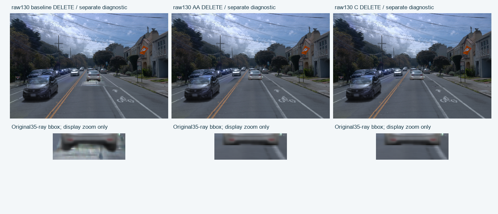
D：后验固定新增行控制，原评价门不变
观察到首轮回退后另立METHOD V2。仅在4个BUILD开发视图累计新增道路child的inside/guard贡献，选inside>0且outside==0；固定行mask跨query与KEEP/DELETE共用。guard额外包含已冻结baseline既有C2、语义a5以及KEEP a37的正贡献像素，保护GT可见mask以外的既有模型尾部。无RGB挑域、无阈值搜索、无参数/材质更新；四帧因此不是HELD。
QUERY只读取固定三维行mask；原v44输入依赖保持。原4560评价域与阈值没有放宽，另增加71条原轮胎ray无新增W损失>1e-6的root release要求。校准时outside=0不自动保证过滤后或其它视图也为0，必须重新成像。
D后验固定行控制：76项通过 / 10项失败 / 8项空域无支持。unsupported不计作通过。
| 候选 | 状态 | 固定世界边界 | 配对bin | latest | 候选 | Δ残差跳变 |
|---|---|---|---|---|---|---|
| D | KEEP | near_x | 24 | 0.0060358 | 0.0060358 | 0.0000000 |
| D | KEEP | far_x | 0 | 无支持 | 无支持 | 无支持 |
| D | KEEP | lateral_y | 23 | 0.0038316 | 0.0038316 | 0.0000000 |
| D | DELETE | near_x | 24 | 0.0071493 | 0.0071493 | 0.0000000 |
| D | DELETE | far_x | 0 | 无支持 | 无支持 | 无支持 |
| D | DELETE | lateral_y | 23 | 0.0035232 | 0.0035232 | 0.0000000 |
原raw128蓝框独立保留
| 候选 | 状态 | 原1385道路像素 RGB MAE | 原6bin near残差jump | near相对变化 |
|---|---|---|---|---|
| D | KEEP | 0.0133528 → 0.0134470 | 0.0054814 → 0.0054814 | +0.00% |
| D | DELETE | 0.0131304 → 0.0132246 | 0.0080031 → 0.0080031 | +0.00% |
主蓝框两侧35/33像素，与worldpatch128两侧36/33分别计算，不拼接。RGB与残差jump以原观测的0–1编码为单位；评分保留原生float，不另加上界截断，PNG仅作显示。
每帧原保护门：最坏值也保留
| 候选 | 原门 | raw/状态 | 最坏变化 | 原上限 | 结果 |
|---|---|---|---|---|---|
| D | a5_RGB | 94/KEEP | 0.0000000 | 0.0000010 | PASS |
| D | a5_upper_RGB | 94/KEEP | 0.0000000 | 0.0000010 | PASS |
| D | a6_RGB | 94/KEEP | 0.0000000 | 0.0000010 | PASS |
| D | a6_depth_m | 94/KEEP | 0.0000000 | 0.0000100 | PASS |
| D | a37_RGB | 94/KEEP | 0.0000000 | 0.0000010 | PASS |
| D | protected_nonroad_RGB | 94/KEEP | 0.0000000 | 0.0000010 | PASS |
| D | original_road_RGB | 94/DELETE | 0.0000152 | 0.0000010 | FAIL |
| D | nonroad_guard:alpha_pixel_max_abs | 94/KEEP | 0.0000000 | 0.0000010 | PASS |
| D | nonroad_guard:depth_pixel_max_abs_m | 94/KEEP | 0.0000000 | 0.0000100 | PASS |
RGB列是对原GT的MAE变化；a6_depth_m为测深MAE变化（m）。nonroad_guard两列是候选对latest的逐像素最大差（alpha或m），不是对GT的精度，也不据MAE通过宣称像素完全一致。
全部失败门（不删帧、不改阈值）
| 名称 | raw | 状态 | 值 | 上限 |
|---|---|---|---|---|
| D:original_road_RGB | 94 | delete | 0.0000152 | 0.0000010 |
| D:original_road_RGB | 105 | delete | 0.0000095 | 0.0000010 |
| D:original_road_RGB | 128 | keep | 0.0000053 | 0.0000010 |
| D:original_road_RGB | 128 | delete | 0.0000053 | 0.0000010 |
| D:original_road_RGB | 137 | keep | 0.0000068 | 0.0000010 |
| D:original_road_RGB | 137 | delete | 0.0000068 | 0.0000010 |
| D:raw128:primary_near_absolute_reduction | keep | 0.0000000 | -0.0001000 | |
| D:raw128:primary_near_relative_reduction | keep | 0.0000000 | -0.0500000 | |
| D:raw128:primary_near_absolute_reduction | delete | 0.0000000 | -0.0001000 | |
| D:raw128:primary_near_relative_reduction | delete | 0.0000000 | -0.0500000 |
| raw | 候选 | 固定ray | vs latest最大|WΔ| | chart-first新增下降>.01 | C vs AA最大|WΔ| |
|---|---|---|---|---|---|
| 128 | D | 36 | 0.0000000 | 0 | 无支持 |
[
{
"name": "D:fixed_wheel71:no_new_assetW_drop",
"raw": 128,
"state": "delete",
"expected_rays": 36,
"actual_rays": 36,
"value": 0.0,
"threshold": 1e-06,
"passed": true,
"role": "Additional stricter root release rule from posterior V2; original4560 gates unchanged"
},
{
"name": "D:fixed_wheel71:no_new_assetW_drop",
"raw": 130,
"state": "delete",
"expected_rays": 35,
"actual_rays": 0,
"value": null,
"threshold": 1e-06,
"passed": null,
"role": "Additional stricter root release rule from posterior V2; original4560 gates unchanged"
}
]D仅保留62/40,392个新增行，保护工程在这些BUILD视图有用，但没有带来接缝改善。D首关已经失败，130额外2次forward已取消；上方130空值表示未执行，不是自动待跑任务。
E：复用融合目标，在原有表面回写外观
原native_static与oldroad共有34,376个合格行（15,262＋19,114），不增加或退役几何。资格在4个BUILD视图中完成，不是拟合成功。原128主68像素中这些安全行可写贡献仅约0.18363/67.54≈0.272%，且oldroad为0；整体道路可写覆盖不能冒充主接缝覆盖，也不单凭比例断言不可能改善。
一次固定预算验证：同一行δRGB zero-init，投影到[-1,1]，Adam .01、400paired steps；原C完整合成目标和原legal mask，4帧现在都属于BUILD。先真实CUDA δ0恒等、smoke4＋disposable2＋完整恢复2及保存/评价，再fresh zero开始正式。实际训练账按收据，不以合同预算冒充已执行。
QUERY在原SH/fine求色后施加同一持久δ并clamp_min(0)，没有上界clamp；原v44输入依赖保持，目标/GT/mask不参与当帧选行或调色。原Gaussian/SH/geometry/identity为0更新，新材质优化有实际更新，二者分开。仅旧400步数相同不构成公平方法比较：原C是BUILD40/6159标量，E是BUILD4/103128标量。
E原有表面回写：82项通过 / 4项失败 / 8项空域无支持。unsupported不计作通过。
| 候选 | 状态 | 固定世界边界 | 配对bin | latest | 候选 | Δ残差跳变 |
|---|---|---|---|---|---|---|
| E | KEEP | near_x | 24 | 0.0060358 | 0.0060217 | -0.0000140 |
| E | KEEP | far_x | 0 | 无支持 | 无支持 | 无支持 |
| E | KEEP | lateral_y | 23 | 0.0038316 | 0.0038129 | -0.0000186 |
| E | DELETE | near_x | 24 | 0.0071493 | 0.0071352 | -0.0000140 |
| E | DELETE | far_x | 0 | 无支持 | 无支持 | 无支持 |
| E | DELETE | lateral_y | 23 | 0.0035232 | 0.0035046 | -0.0000186 |
原raw128蓝框独立保留
| 候选 | 状态 | 原1385道路像素 RGB MAE | 原6bin near残差jump | near相对变化 |
|---|---|---|---|---|
| E | KEEP | 0.0133528 → 0.0131718 | 0.0054814 → 0.0054713 | -0.18% |
| E | DELETE | 0.0131304 → 0.0129495 | 0.0080031 → 0.0079930 | -0.13% |
主蓝框两侧35/33像素，与worldpatch128两侧36/33分别计算，不拼接。RGB与残差jump以原观测的0–1编码为单位；评分保留原生float，不另加上界截断，PNG仅作显示。
每帧原保护门：最坏值也保留
| 候选 | 原门 | raw/状态 | 最坏变化 | 原上限 | 结果 |
|---|---|---|---|---|---|
| E | a5_RGB | 94/KEEP | 0.0000000 | 0.0000010 | PASS |
| E | a5_upper_RGB | 94/KEEP | 0.0000000 | 0.0000010 | PASS |
| E | a6_RGB | 94/KEEP | 0.0000000 | 0.0000010 | PASS |
| E | a6_depth_m | 94/KEEP | 0.0000000 | 0.0000100 | PASS |
| E | a37_RGB | 94/KEEP | 0.0000000 | 0.0000010 | PASS |
| E | protected_nonroad_RGB | 94/KEEP | 0.0000000 | 0.0000010 | PASS |
| E | original_road_RGB | 137/KEEP | -0.0004504 | 0.0000010 | PASS |
| E | nonroad_guard:alpha_pixel_max_abs | 94/KEEP | 0.0000000 | 0.0000010 | PASS |
| E | nonroad_guard:depth_pixel_max_abs_m | 94/KEEP | 0.0000000 | 0.0000100 | PASS |
RGB列是对原GT的MAE变化；a6_depth_m为测深MAE变化（m）。nonroad_guard两列是候选对latest的逐像素最大差（alpha或m），不是对GT的精度，也不据MAE通过宣称像素完全一致。
全部失败门（不删帧、不改阈值）
| 名称 | raw | 状态 | 值 | 上限 |
|---|---|---|---|---|
| E:raw128:primary_near_absolute_reduction | keep | -0.0000101 | -0.0001000 | |
| E:raw128:primary_near_relative_reduction | keep | -0.0018424 | -0.0500000 | |
| E:raw128:primary_near_absolute_reduction | delete | -0.0000101 | -0.0001000 | |
| E:raw128:primary_near_relative_reduction | delete | -0.0012619 | -0.0500000 |
方法另要求全图alpha/depth/原7groupW与baseline一致：24/24个实际检查通过。仅指这些几何读出，RGB仍按原门独立评价。
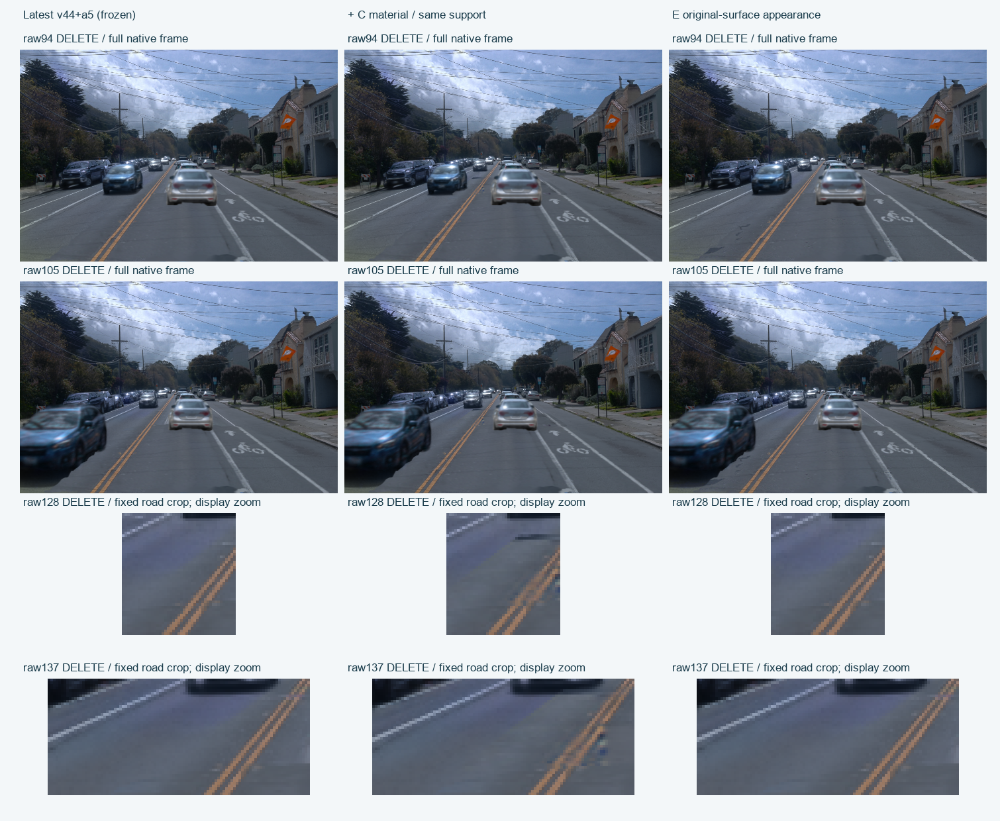
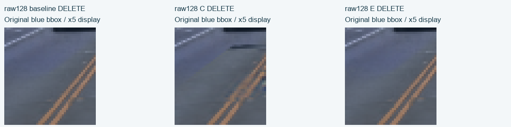
E完整KEEP四帧
实际原生RGB范围（未额外截断）
[
{
"raw": 94,
"state": "keep",
"variant": "baseline",
"min": -0.04367917776107788,
"max": 1.074397325515747,
"additional_upper_clamp_in_evaluator": false
},
{
"raw": 94,
"state": "keep",
"variant": "E",
"min": -0.04367917776107788,
"max": 1.074397325515747,
"additional_upper_clamp_in_evaluator": false
},
{
"raw": 94,
"state": "delete",
"variant": "baseline",
"min": -0.04367917776107788,
"max": 1.074397325515747,
"additional_upper_clamp_in_evaluator": false
},
{
"raw": 94,
"state": "delete",
"variant": "E",
"min": -0.04367917776107788,
"max": 1.074397325515747,
"additional_upper_clamp_in_evaluator": false
},
{
"raw": 105,
"state": "keep",
"variant": "baseline",
"min": -0.004244059324264526,
"max": 1.1262192726135254,
"additional_upper_clamp_in_evaluator": false
},
{
"raw": 105,
"state": "keep",
"variant": "E",
"min": -0.004244059324264526,
"max": 1.1262192726135254,
"additional_upper_clamp_in_evaluator": false
},
{
"raw": 105,
"state": "delete",
"variant": "baseline",
"min": -0.004244059324264526,
"max": 1.1262192726135254,
"additional_upper_clamp_in_evaluator": false
},
{
"raw": 105,
"state": "delete",
"variant": "E",
"min": -0.004244059324264526,
"max": 1.1262192726135254,
"additional_upper_clamp_in_evaluator": false
},
{
"raw": 128,
"state": "keep",
"variant": "baseline",
"min": -0.007411573082208633,
"max": 1.1276270151138306,
"additional_upper_clamp_in_evaluator": false
},
{
"raw": 128,
"state": "keep",
"variant": "E",
"min": -0.007411573082208633,
"max": 1.1276270151138306,
"additional_upper_clamp_in_evaluator": false
},
{
"raw": 128,
"state": "delete",
"variant": "baseline",
"min": -0.007411573082208633,
"max": 1.1276270151138306,
"additional_upper_clamp_in_evaluator": false
},
{
"raw": 128,
"state": "delete",
"variant": "E",
"min": -0.007411573082208633,
"max": 1.1276270151138306,
"additional_upper_clamp_in_evaluator": false
},
{
"raw": 137,
"state": "keep",
"variant": "baseline",
"min": -0.029569320380687714,
"max": 1.1875675916671753,
"additional_upper_clamp_in_evaluator": false
},
{
"raw": 137,
"state": "keep",
"variant": "E",
"min": -0.029569320380687714,
"max": 1.1875675916671753,
"additional_upper_clamp_in_evaluator": false
},
{
"raw": 137,
"state": "delete",
"variant": "baseline",
"min": -0.029569320380687714,
"max": 1.1875675916671753,
"additional_upper_clamp_in_evaluator": false
},
{
"raw": 137,
"state": "delete",
"variant": "E",
"min": -0.029569320380687714,
"max": 1.1875675916671753,
"additional_upper_clamp_in_evaluator": false
}
]F：分域有界原表面颜色，原门不放宽
E的零spill支撑在主缝太少，因此另立后验资格合同。保持同一原场景与原4560评价门，测每个BUILD帧/状态、每个原保护域的非负native贡献矩阵A。若以wᵣ=maxₘ Aₘᵣ/(3Nₘ·5e−7)，限制Σᵣwᵣ‖δᵣ‖₁≤1，则固定T与ReLU的1-Lipschitz性给出每个已校准保护域RGB MAE回退≤5e−7，保留原1e−6门的一半浮点裕量。
这是均值界，不是像素max或额外49相机保证；空域N=0仍为unsupported。资格得到203,932个inside-positive原有行，不意味着每列可独立无限使用。F实际fresh zero、同4源目标/合法mask与Adam.01完成400paired更新，δ先box cap1再weighted L1预算投影；不是续训E或调整E的cap救结果。真实预算约束通过，质量仍有失败。
w0与LP只表示operator capacity，不是已实现误差改善。QUERY仍是固定三维行共享δ、原7group与相同几何；不能继承E额外all-model-alpha像素的joint RGB exact性质。
F有界原表面外观回写：82项通过 / 4项失败 / 8项空域无支持。unsupported不计作通过。
| 候选 | 状态 | 固定世界边界 | 配对bin | latest | 候选 | Δ残差跳变 |
|---|---|---|---|---|---|---|
| F | KEEP | near_x | 24 | 0.0060358 | 0.0054756 | -0.0005601 |
| F | KEEP | far_x | 0 | 无支持 | 无支持 | 无支持 |
| F | KEEP | lateral_y | 23 | 0.0038316 | 0.0040678 | 0.0002362 |
| F | DELETE | near_x | 24 | 0.0071493 | 0.0064863 | -0.0006629 |
| F | DELETE | far_x | 0 | 无支持 | 无支持 | 无支持 |
| F | DELETE | lateral_y | 23 | 0.0035232 | 0.0038153 | 0.0002921 |
原raw128蓝框独立保留
| 候选 | 状态 | 原1385道路像素 RGB MAE | 原6bin near残差jump | near相对变化 |
|---|---|---|---|---|
| F | KEEP | 0.0133528 → 0.0122394 | 0.0054814 → 0.0052376 | -4.45% |
| F | DELETE | 0.0131304 → 0.0117304 | 0.0080031 → 0.0077513 | -3.15% |
主蓝框两侧35/33像素，与worldpatch128两侧36/33分别计算，不拼接。RGB与残差jump以原观测的0–1编码为单位；评分保留原生float，不另加上界截断，PNG仅作显示。
每帧原保护门：最坏值也保留
| 候选 | 原门 | raw/状态 | 最坏变化 | 原上限 | 结果 |
|---|---|---|---|---|---|
| F | a5_RGB | 94/DELETE | 0.0000000 | 0.0000010 | PASS |
| F | a5_upper_RGB | 94/KEEP | 0.0000000 | 0.0000010 | PASS |
| F | a6_RGB | 94/KEEP | 0.0000000 | 0.0000010 | PASS |
| F | a6_depth_m | 94/KEEP | 0.0000000 | 0.0000100 | PASS |
| F | a37_RGB | 105/KEEP | 0.0000000 | 0.0000010 | PASS |
| F | protected_nonroad_RGB | 128/KEEP | -0.0000000 | 0.0000010 | PASS |
| F | original_road_RGB | 94/KEEP | -0.0019983 | 0.0000010 | PASS |
| F | nonroad_guard:alpha_pixel_max_abs | 94/KEEP | 0.0000000 | 0.0000010 | PASS |
| F | nonroad_guard:depth_pixel_max_abs_m | 94/KEEP | 0.0000000 | 0.0000100 | PASS |
RGB列是对原GT的MAE变化；a6_depth_m为测深MAE变化（m）。nonroad_guard两列是候选对latest的逐像素最大差（alpha或m），不是对GT的精度，也不据MAE通过宣称像素完全一致。
全部失败门（不删帧、不改阈值）
| 名称 | raw | 状态 | 值 | 上限 |
|---|---|---|---|---|
| F:lateral_y:equal_bin_pooled | keep | 0.0002362 | 0.0000010 | |
| F:raw128:primary_near_relative_reduction | keep | -0.0444824 | -0.0500000 | |
| F:lateral_y:equal_bin_pooled | delete | 0.0002921 | 0.0000010 | |
| F:raw128:primary_near_relative_reduction | delete | -0.0314619 | -0.0500000 |
全图alpha/depth/原7groupW：24/24个实际检查通过。原有保护域的RGB均值界通过，不意味着每像素不变或删除后足迹无伪影。
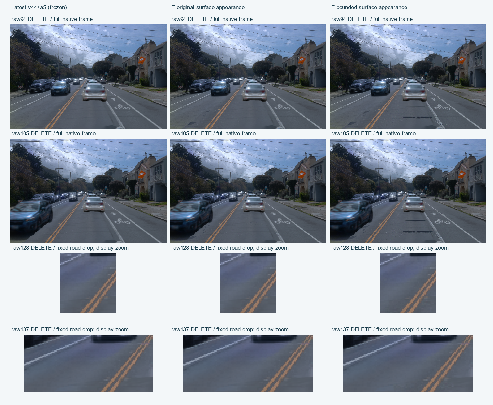
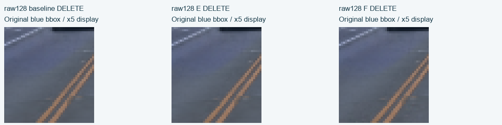
F实际KEEP四帧
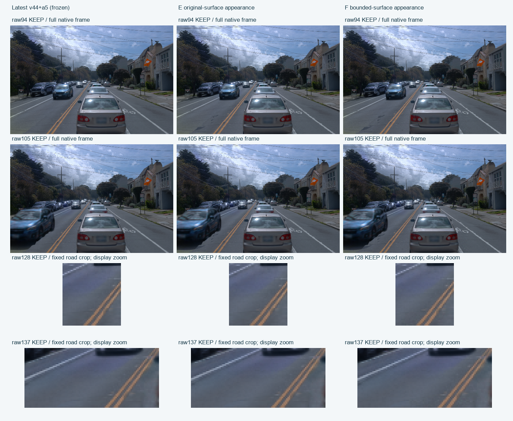
F新增暗条：监督输入与删除足迹独立核对
四帧实际fit_mask与actor_labels>0、full37(label5)、visible37的交集全部为0。目标文件在原车体域虽然保留Observed RGB，这些像素并未进入拟合loss，不能认定直接用车尾/牌照像素监督DELETE。fit仍包含部分原观测阴影/暗路面，原观测不是删除后的隐藏道路真值。
新暗条跨入原a37投影域：raw94有638个原车体像素的编码亮度变化<−0.05，最大RGB移动0.2431；例如(246,282)为label5/visible37、fit=False、road_edit=True，KEEP37W≈0.999897，而DELETE37W=0。所有geometry/group alpha与语义a5贡献保持一致，变化来自本次static/oldroad颜色场。该证据表明跨域颜色耦合，不能把横条仅称为合法阴影；尚未唯一追溯到某个源阴影。
原保护域排除了road_edit，KEEP可见a37又遮住其后表面；两者的均值通过不能覆盖DELETE暴露表面的颜色。这里的新增暗化阈值和裁剪是后验诊断，不更改原门。
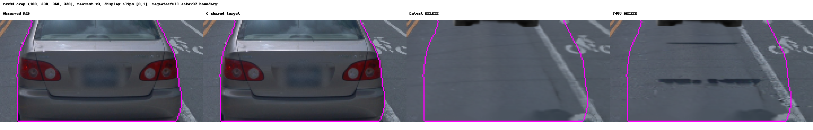
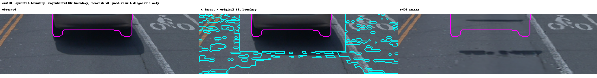
全部4帧top20暗化位置与源文件SHA
G历史诊断：后续合成扰动与颜色求解已取消
针对F的失败读取原world near/lateral及原128独立蓝框53个pair的signed Jacobian，并补充DELETE原full37(label5)或baseline KEEP37W>0.5的足迹颜色域。原primary35/33像素与world128的36/33分开，raw94无接缝pair；未使用暗条裁剪作为优化ROI。
实际22F/22dummyB读取已在远端完成，0 Adam/0原模型更新；计划8F合成扰动与CPU颜色solve在执行前取消。该操作子证据不是成功拟合或新候选图，主线已回到完整道路支撑和遮挡。
原道路报告：研究候选与本次整合分开
原C基于同40,392行n2＋relativeMip支撑、400paired steps的持久共享材质；2053父RGB可拟合，8045父行保留初值。C使用已有真实RGB固定10px边缘锚定，收益不是纯Poisson或隐藏纹理恢复。原C对AA的横向均值改善，原128 near和全49 near却回退；此前就没有全场景采用。
本次增加支撑相对latest会改变遮挡/alpha/期望深度；不能把旧C-vs-AA的几何读出一致移植成新整合也无损。旧HELD9目标含query O仅供构造诊断，原native材质不以query O调色；同场景曝光限制保留。
数值门、来源和执行
每帧a5 body/upper、a6 RGB、KEEP a37及protected_nonroad RGB MAE变化≤1e-6；a6测深MAE变化≤1e-5m。道路外固定guard alpha/depth最大差≤1e-6/1e-5m。near/lateral等bin双状态pooled不回退，原128 near须两状态各至少5%相对且1e-4绝对改善。旧宽松门仅历史参考，不替代本轮标准。
所有域来自原观测/冻结registry，不按候选alpha改分母。所有空域/无支持保留null，RGB均值不代表逐像素无损。Observed中a37仍在，没有删除后隐藏道路真值；human_verdict=null。
- 候选前冻结的4560数值合同
- 独立正式四帧＋130 CPU审查
- root独立spot复核（不替代正式评价）
- 实际三variant36PNG逐SHA取回
- 道路资产/ABI CPU核对
- 固定材质边界source配对
- 原道路交付162JSON/1137PNG读取核验
- 独立CPU评价源码
- 纯NumPy固定mask定义（无环境副作用）
- 实际PNG图版构建器
- 报告构建器
- 原域逐帧RGB/深度CSV
- 报告数据及输入manifest
- 实际计算账本
- root实际原图审阅记录（待取回）
- E固定400paired预算/完整生命周期合同
- E真实资格/可写覆盖独立CPU复算
- E非负/HDR接口CPU fixture（非GPU验收）
- 道路外观重现包：资格/δRGB/绑定/源码，不含原Gaussweights（待取回）
- E实际100/200/400 checkpoint/导出/不变量独立CPU审计
- F后验有界颜色资格合同（尚非拟合结果）
- F独立fresh400有界外观拟合合同
- F独立CPU正式四帧评价（含全部失败门）
- F实际预算/保存/几何不变量独立CPU复算
- F实际400材质更新与808F/800B收据
- F失败候选重现元数据包：材质/矩阵/API，另依赖原模型
- F元数据包本机逐文件核验
- F监督域与暗条逐像素CPU审计
- 原拟合mask与阴影上下文图
- 只读暗化top20/监督域审计源码
- 原fit边界上下文图源码
- G后验联合可达性/追加删除足迹保护合同
- 纯NumPy原53接缝pair接口（无CUDA环境写入）
- 原53pair每bin像素数/mask SHA独立核对
- through F完整状态/源码/收据逐SHA取回
- 用户纠正后的完整支撑/遮挡主线
- 缓存128/137银片与C2逐组alpha_T审计
- 银片来源审计源码（不加载模型）
- 原130固定35轮胎ray组件接管核对
- G实际22F/22B操作子读取收据（不含拟合）
- G signed residual与已取消后续说明
- G实际追加账本
实际账本与root原图记录
{
"through_F_ledger": {
"schema": "SCENE008_ROAD_INTEGRATION_ACTUAL_EXECUTION_LEDGER_V1",
"scope": "Only this road integration campaign; previous identity/reconstruction/training campaigns have separate ledgers.",
"status": "COMPLETED_FIXED_F400_PENDING_OR_RECORDED_QUALITY_REVIEW_NO49",
"actual_totals": {
"actual_native_forwards": 1747,
"actual_native_or_dummy_backwards": 1656,
"new_colour_residual_formal_updates": 800,
"new_colour_residual_engineering_updates": 16,
"original_Gaussian_SH_geometry_opacity_identity_updates": 0
},
"phases": [
{
"phase": "latest_semantic_baseline4",
"receipt": "baseline4/receipt.json",
"receipt_sha256": "19f15910346a806599ddb797412cb7dd0c73360105098cc9e4058e86ccd3601e",
"actual_native_forwards": 8,
"actual_native_or_dummy_backwards": 0,
"new_colour_residual_formal_updates": 0,
"new_colour_residual_engineering_updates": 0,
"original_Gaussian_SH_geometry_opacity_identity_updates": 0,
"status": "RENDERED_LATEST_SEMANTIC_BASELINE4_PENDING_CACHED_EXACT_REPLAY",
"note": ""
},
{
"phase": "AA_first_forward_assertion_failure",
"receipt": "contract/first_forward_engineering_failure.json",
"receipt_sha256": "379f21d353c475ff7e4c9a3a8b4f171028a523d20590a9aae1f4e32f748e97b9",
"actual_native_forwards": 1,
"actual_native_or_dummy_backwards": 0,
"new_colour_residual_formal_updates": 0,
"new_colour_residual_engineering_updates": 0,
"original_Gaussian_SH_geometry_opacity_identity_updates": 0,
"status": "PRESERVED_FIRST_FORWARD_ENGINEERING_ASSERTION_FAILURE",
"note": "One actual native call occurred before the diagnostic unused-channel assertion. Preserved; not zero compute."
},
{
"phase": "AA4_retry1",
"receipt": "AA4_retry1/receipt.json",
"receipt_sha256": "80c07594d36b8e264576df0e3ed4e5bb41fc3663a9d01c07325318ed9bae92ff",
"actual_native_forwards": 8,
"actual_native_or_dummy_backwards": 0,
"new_colour_residual_formal_updates": 0,
"new_colour_residual_engineering_updates": 0,
"original_Gaussian_SH_geometry_opacity_identity_updates": 0,
"status": "RENDERED_ROAD_AA_OR_C_FOUR_FRAME_PILOT_PENDING_STRICT_INDEPENDENT_EVALUATION",
"note": ""
},
{
"phase": "C4_retry1",
"receipt": "C4_retry1/receipt.json",
"receipt_sha256": "0ffaf920adca1665058df731e1fbf2adf5804dce43bbdb573772a1f6dd75d05f",
"actual_native_forwards": 8,
"actual_native_or_dummy_backwards": 0,
"new_colour_residual_formal_updates": 0,
"new_colour_residual_engineering_updates": 0,
"original_Gaussian_SH_geometry_opacity_identity_updates": 0,
"status": "RENDERED_ROAD_AA_OR_C_FOUR_FRAME_PILOT_PENDING_STRICT_INDEPENDENT_EVALUATION",
"note": ""
},
{
"phase": "tire130_baseline",
"receipt": "diagnostic130/baseline/receipt.json",
"receipt_sha256": "8e97c2e0c27f814c20f16dbd11b3966bf04fdea17f3c17f7d746218922529abd",
"actual_native_forwards": 2,
"actual_native_or_dummy_backwards": 0,
"new_colour_residual_formal_updates": 0,
"new_colour_residual_engineering_updates": 0,
"original_Gaussian_SH_geometry_opacity_identity_updates": 0,
"status": "RENDERED_LATEST_SEMANTIC_BASELINE4_PENDING_CACHED_EXACT_REPLAY",
"note": ""
},
{
"phase": "tire130_AA",
"receipt": "diagnostic130/AA/receipt.json",
"receipt_sha256": "ecd5e62f24a1073af36f82d322f8f60312ebe362e2c7d9cb7b285d148dc6bd5b",
"actual_native_forwards": 2,
"actual_native_or_dummy_backwards": 0,
"new_colour_residual_formal_updates": 0,
"new_colour_residual_engineering_updates": 0,
"original_Gaussian_SH_geometry_opacity_identity_updates": 0,
"status": "RENDERED_ROAD_AA_OR_C_FOUR_FRAME_PILOT_PENDING_STRICT_INDEPENDENT_EVALUATION",
"note": ""
},
{
"phase": "tire130_C",
"receipt": "diagnostic130/C/receipt.json",
"receipt_sha256": "da1efc51206f79c609d779dfb8c704b40cb059bca0f71da5ae208f42176870ec",
"actual_native_forwards": 2,
"actual_native_or_dummy_backwards": 0,
"new_colour_residual_formal_updates": 0,
"new_colour_residual_engineering_updates": 0,
"original_Gaussian_SH_geometry_opacity_identity_updates": 0,
"status": "RENDERED_ROAD_AA_OR_C_FOUR_FRAME_PILOT_PENDING_STRICT_INDEPENDENT_EVALUATION",
"note": ""
},
{
"phase": "D_support_qualification_v2",
"receipt": "support_qualification4_v2/receipt.json",
"receipt_sha256": "f43eaa55dd0ce8eb0a112c44607350771055be9608d081b32d084a7e316bf460",
"actual_native_forwards": 8,
"actual_native_or_dummy_backwards": 8,
"new_colour_residual_formal_updates": 0,
"new_colour_residual_engineering_updates": 0,
"original_Gaussian_SH_geometry_opacity_identity_updates": 0,
"status": "PASS_FIXED_BUILD_SUPPORT_QUALIFICATION_ENGINEERING_PENDING_D_RENDER",
"note": ""
},
{
"phase": "D_fixed_support4_v2",
"receipt": "D4_v2/receipt.json",
"receipt_sha256": "9635db892d148eeab2a5d12507587843684c2dfb5082d1587b2aac0e7f2508c2",
"actual_native_forwards": 8,
"actual_native_or_dummy_backwards": 0,
"new_colour_residual_formal_updates": 0,
"new_colour_residual_engineering_updates": 0,
"original_Gaussian_SH_geometry_opacity_identity_updates": 0,
"status": "RENDERED_ROAD_AA_OR_C_FOUR_FRAME_PILOT_PENDING_STRICT_INDEPENDENT_EVALUATION",
"note": ""
},
{
"phase": "E_existing_surface_qualification",
"receipt": "E4_appearance_qualification/receipt.json",
"receipt_sha256": "c93b7b727ca03e741a4ee5597c8879e3bb66e41d63522f7641a8dade5b6cc9b7",
"actual_native_forwards": 8,
"actual_native_or_dummy_backwards": 8,
"new_colour_residual_formal_updates": 0,
"new_colour_residual_engineering_updates": 0,
"original_Gaussian_SH_geometry_opacity_identity_updates": 0,
"status": "PASS_EXISTING_SURFACE_QUALIFICATION_ENGINEERING_NO_FIT",
"note": ""
},
{
"phase": "E_public_zero_residual_identity4",
"receipt": "E_zero_identity4/receipt.json",
"receipt_sha256": "b852a7c01c9fa4e8383de7a002b5e4c8c5bbad9f74d53b2c8741b52210a88a6e",
"actual_native_forwards": 8,
"actual_native_or_dummy_backwards": 0,
"new_colour_residual_formal_updates": 0,
"new_colour_residual_engineering_updates": 0,
"original_Gaussian_SH_geometry_opacity_identity_updates": 0,
"status": "PASS_PUBLIC_415_ZERO_DELTA_ALL4_KD_EXACT_BASELINE",
"note": "Fresh real public-API eight forwards, counted separately from baseline and smoke."
},
{
"phase": "E_real_smoke_and_disposable_next2",
"receipt": "E_smoke_r1/returned.json",
"receipt_sha256": "f425da4d44db8cf8a860abd65ce0217b037285e9b26b0690fd793c66a0467a5b",
"actual_native_forwards": 20,
"actual_native_or_dummy_backwards": 12,
"new_colour_residual_formal_updates": 0,
"new_colour_residual_engineering_updates": 6,
"original_Gaussian_SH_geometry_opacity_identity_updates": 0,
"status": "PASS_SMOKE_SAVE_PUBLIC_EVAL_AND_DISPOSABLE_NEXT2",
"note": ""
},
{
"phase": "E_fresh_restore_next2_and_train_public_parity",
"receipt": "E_restore_parity_r1/returned.json",
"receipt_sha256": "b9da3c95229b0f628d61f527e2d5fc82bb9264400ff0e74952a02c7904587111",
"actual_native_forwards": 6,
"actual_native_or_dummy_backwards": 4,
"new_colour_residual_formal_updates": 0,
"new_colour_residual_engineering_updates": 2,
"original_Gaussian_SH_geometry_opacity_identity_updates": 0,
"status": "PASS_FRESH_FULL_RESTORE_NEXT2_AND_TRAIN_PUBLIC_PARITY",
"note": "Two same-delta direct128 K/D parity forwards plus four training forwards; fresh restoration begins bit exact, subsequent numeric differences are retained."
},
{
"phase": "E_fresh_formal400",
"receipt": "E_formal400_r1/returned.json",
"receipt_sha256": "3e9b1ea21ef5a8ab474ab86fcac54e5b2c2e66334d3f9674ac2a7cb3cbc7dbf0",
"actual_native_forwards": 808,
"actual_native_or_dummy_backwards": 800,
"new_colour_residual_formal_updates": 400,
"new_colour_residual_engineering_updates": 0,
"original_Gaussian_SH_geometry_opacity_identity_updates": 0,
"status": "COMPLETE_FIXED_400_PAIRED_COLOUR_RESIDUAL_BAKE_PENDING_GATES",
"note": ""
},
{
"phase": "F_bounded_mass_qualification",
"receipt": "F4_bounded_appearance_qualification/receipt.json",
"receipt_sha256": "d94e0175f27633b932b5e40b1740c0232bad494bd14e467a7bc157f33f6131bb",
"actual_native_forwards": 8,
"actual_native_or_dummy_backwards": 8,
"new_colour_residual_formal_updates": 0,
"new_colour_residual_engineering_updates": 0,
"original_Gaussian_SH_geometry_opacity_identity_updates": 0,
"status": "PASS_BOUNDED_PROTECTION_MASS_FEASIBILITY_NO_FIT",
"note": ""
},
{
"phase": "F_public_zero_residual_identity4",
"receipt": "F_zero_identity4/receipt.json",
"receipt_sha256": "127977812c808d16e6867b7ff1c7decb570ef4677cb1901fd4f6270335214555",
"actual_native_forwards": 8,
"actual_native_or_dummy_backwards": 0,
"new_colour_residual_formal_updates": 0,
"new_colour_residual_engineering_updates": 0,
"original_Gaussian_SH_geometry_opacity_identity_updates": 0,
"status": "PASS_PUBLIC_BOUNDED_F_ZERO_DELTA_ALL4_KD_EXACT_BASELINE",
"note": ""
},
{
"phase": "F_real_smoke_and_disposable_next2",
"receipt": "F_smoke_r1/returned.json",
"receipt_sha256": "d61a8ad116339265b075ba7141028c061573a6f913fc3580d6abdbd3983b876c",
"actual_native_forwards": 20,
"actual_native_or_dummy_backwards": 12,
"new_colour_residual_formal_updates": 0,
"new_colour_residual_engineering_updates": 6,
"original_Gaussian_SH_geometry_opacity_identity_updates": 0,
"status": "PASS_SMOKE_SAVE_PUBLIC_EVAL_AND_DISPOSABLE_NEXT2",
"note": ""
},
{
"phase": "F_fresh_restore_next2_and_train_public_parity",
"receipt": "F_restore_parity_r1/returned.json",
"receipt_sha256": "778f9b0a0474950a3df133b8ac7455d25d7da80e0528ce8ef287fc6fee394adb",
"actual_native_forwards": 6,
"actual_native_or_dummy_backwards": 4,
"new_colour_residual_formal_updates": 0,
"new_colour_residual_engineering_updates": 2,
"original_Gaussian_SH_geometry_opacity_identity_updates": 0,
"status": "PASS_FRESH_FULL_RESTORE_NEXT2_AND_TRAIN_PUBLIC_PARITY",
"note": ""
},
{
"phase": "F_fresh_formal400",
"receipt": "F_formal400_r1/returned.json",
"receipt_sha256": "726c9b39e756c87ee22066286974d9f68c60e8c7af0ee909ccde3db37f4f2201",
"actual_native_forwards": 808,
"actual_native_or_dummy_backwards": 800,
"new_colour_residual_formal_updates": 400,
"new_colour_residual_engineering_updates": 0,
"original_Gaussian_SH_geometry_opacity_identity_updates": 0,
"status": "COMPLETE_FIXED_400_PAIRED_BOUNDED_COLOUR_RESIDUAL_BAKE_PENDING_GATES",
"note": ""
}
],
"not_executed": [
"D qualification v1 GPU: superseded before execution",
"D130 extra two forward diagnostic: cancelled before execution",
"Any road-integration49 render",
"Any original Gaussian or SH optimization"
],
"original_source_Gaussians_optimized": false,
"all_current_four_views_are_BUILD": true,
"old_HELD105_137_is_historical_role_only": true,
"source_C_targets_include_observation_anchoring": true,
"future_or_unseen_view_protection_guarantee": false,
"automatic_quality_adoption": false,
"automatic49": false,
"GPU_power": "KEEP_ON",
"shutdown": false,
"reset_card": false,
"created_unix": 1794036043.3440278
},
"G_appendix": {
"schema": "ROAD_G_OPERATOR_ACTUAL_COMPUTE_APPENDIX_V1",
"previous_ledger": "road_execution_ledger_v1.json",
"prior_native_forwards": 1747,
"prior_backwards": 1656,
"G_actual_native_forwards": 22,
"G_actual_dummy_backwards": 22,
"new_native_forwards_total": 1769,
"new_native_or_dummy_backwards_total": 1678,
"formal_colour_residual_updates_total": 800,
"engineering_colour_residual_updates_total": 16,
"original_Gaussian_SH_geometry_opacity_identity_updates": 0,
"synthetic8F": "Not executed; explicitly cancelled",
"G_solver_render": "Not executed",
"all49": "Not executed",
"GPU_power": "KEEP_ON"
},
"root_visual": null
}可见性核对的一手依据与迁移边界
原作者光栅源码按Gaussian／tile深度键排序；StopThePop（2024）研究了单一view-space深度所带来的可见性伪影。这支持把当前残片的材质问题与真实三维首交分开核验，并不证明本例只有该根因。本轮未替换CUDA或接入新renderer，只在冻结资产上核对chart／ground首交；H2仍按实际失败报告。实际迁移点与证据边界